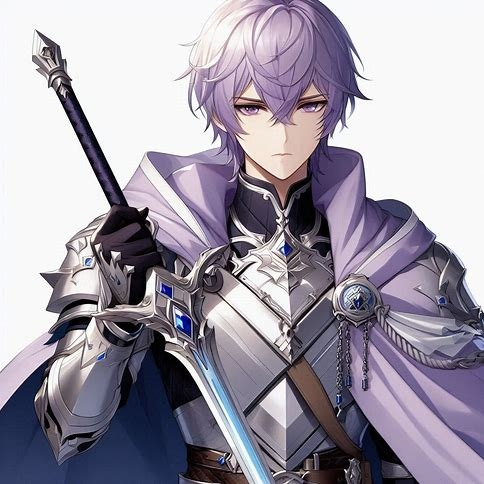

Інформація для того, щоб розуміти хоча б трохи цей текст, і що відбувається.
(Коррі - головний у корпорації по реабілітації маньяків, і скромний 18 річний хлопчина з довгим голубим волоссям, та головний герой. Гліо - іноді запальний, але добрий та справедливий гібрид кролика та людини якому десь 22-25 роки, з кремовим волоссям трішки вище шиї, та учасник цієї компанії. Кассандра - несерйозна 20-21 річна дівчина з каштановим волоссям каре, і також учасниця цієї компанії. І Сара, порядна 20-25 річна дівчина блондинка із, вже мертвим, братом, ну а взагалі вона доктор у компанії з реабілітації, та просто розумна дівчина, яка покращила обладнання компанії та всіх своїх колег. Наприклад – після розриву матерії, яка була викликана Сарою, коли вона захищала Землю від винищувачів, з'явився портал на іншу планету. І, може зараз Сара і не має надсилу, вона все ще зробила величезний тесак для Гліо, покращила ножі Кассандри. І зробила броню для Коррі.)
Після всього, що сталося, після того, як корпорацію з реабілітації маніяків закрили через її повну неефективність, а людство пережило кризу, життя почало входити у звичне русло. Сара врятувала всіх, ціною власних сил створивши розрив матерії та випадково відкривши портал на іншу планету. Вона сама вирішила залишитися на Землі, бо не любила всі ці космічні пригоди.
— "Я вже наробила достатньо хаосу," — усміхнулася вона, проводжаючи друзів.
— "Будеш за нами сумувати?" — підморгнула Кассандра.
— "Я сумуватиму за спокоєм З вами, а без вас буде ідеально," — жартома відповіла Сара.
Коррі, Гліо та Кассандра зібрали необхідні припаси, попрощалися з втомленою, але все ще бадьорою Сарою і зробили крок у портал.
Світло, падіння і… новий світ.
Яскраве світло засліпило очі. У голові Коррі з’явилося дивне відчуття, ніби він розчинився у зоряному пилу. Простір навколо нагадував космос — нескінченний, сяючий, величний.
— "Це… дивно," — встиг промовити він, перш ніж почав стрімко падати.
Гліо і Кассандра впали поруч, але жоден із них не відчув болю. Коррі підвів голову й побачив, що друзі здивовано вдивляються в нього.
— "Гарне приземлення, босе," — підморгнув Гліо, простягаючи руку.
Коррі, трохи ошелешений, прийняв допомогу і підвівся, оглядаючи місцевість. Навколо було звичайне поле — настільки звичайне, що його це лякало.
— "Земля?.." — промовив він.
— "Та ні, не може бути," — заперечила Кассандра, обводячи поглядом пейзаж. — "Але чому тут усе виглядає так знайомо?"
Їхні думки обірвала величезна фортечна стіна, що височіла перед ними. Вона була близько 100 метрів заввишки, оточена глибоким ровом із містком, що вів до масивних воріт.
— "Це що, середньовічний замок?" — здивовано пробурмотів Гліо.
Коррі прикусив губу, перебираючи варіанти.
— "Можна постукати у ворота, але що, якщо нас там не зрадіють бачити?"
— "Можемо спробувати перелізти через стіну," — запропонувала Кассандра.
— "Це забере забагато сил," — Коррі зітхнув, обдумуючи, як діяти далі.
Та перш ніж він встиг щось вирішити, Кассандра безтурботно підійшла до воріт і простягнула руку, щоб постукати.
— "Кассандро, почекай!" — вигукнув Гліо, але було запізно.
Раптово повітря навколо них загустіло, наповнюючись фіолетовим туманом. Він обволік трійцю з усіх боків, перетворюючи навколишній світ на непроглядну млу.
— "Коррі? Гліо?!" — крикнула Кассандра, її голос лунав приглушено.
Коррі запанікував, вдивляючись у густий дим, але нічого не міг розгледіти. Світ почав пливти перед очима. Його повіки стали важкими.
— "Що це?.. Це… газ?.." — ледве прошепотів він, відчуваючи, як свідомість залишає його.
Темрява поглинула Коррі.
Коррі повільно відкрив очі. Його голова гуділа, немов після сильного удару, а в роті пересохло...
Поруч зі стіною, склавши руки за головою, спокійно сидів Гліо. Кассандра ж лежала на боці, рівно дихаючи — вона ще не прокинулася.
Коррі провів рукою по холодних металевих прутах...
— "Гліо… Ти пам’ятаєш, що сталося?"
— "Ага… пам’ятаю, що хотів постукати в ті кляті ворота. А далі — темрява. Очевидно, нас приспали."
Проте подальші роздуми перервало відкриття дверей нагорі...
До клітки підійшов хлопець з коротким, злегка хвилястим світло-фіолетовим волоссям...
— "Вже прокинулись? Ну ви й соні," — м’яким, але впевненим голосом промовив незнайомець.
— "А ти хто взагалі такий?" — запитав Коррі.
— "Я Мурасакі Кіші, генерал королівства Зонтані-Гонія. А ви зараз знаходитеся в його підземній в’язниці."
Коррі звів брови.
— "До речі, ми навіть не знаємо, де ми опинилися. Як називається ця планета?"
— "Каролайн-19," — спокійно відповів Мурасакі.
Кассандра примружилася.
— "Звучить, як технічне позначення, а не звичайна назва."
— "Це так," — підтвердив лицар. — "Колись, ще задовго до нашого часу, вона мала інше ім’я..."
— "І просто так випустиш нас?" — запитав Коррі.
— "Так. І вибачуся за несподівану атаку," — Мурасакі зробив крок уперед і витягнув ключ...
— "І що тепер?" — запитав Гліо.
Обличчя Мурасакі трохи потемнішало.
— "Я маю до вас прохання," — його голос став серйознішим.
Коррі перехрестив руки на грудях.
— "Слухаємо."
— "Наше місто нещодавно вигнало колишнього генерала," — пояснив він. — "За… найстрашніший гріх. Проте я досі не можу в це повірити. Мені потрібно дізнатися правду. Ви допоможете?"
Настала пауза. Компанія обмінялася поглядами.
— "Якщо це щось серйозне, то це не зовсім наша справа," — зауважив Гліо.
— "Але, з іншого боку, ми й так нічого про цю планету не знаємо," — додала Кассандра. — "Може, варто розібратися?"
Коррі кілька секунд мовчав, зважуючи всі «за» і «проти». Нарешті він кивнув.
— "Гаразд. Допоможемо тобі в цьому розслідуванні."
Мурасакі вдячно вклонився.
— "Дякую. Тоді ходімо."
Він повернувся й повів їх нагору, до виходу з в’язниці.
Коли компанія піднялася нагору, перед ними розкинулося величне місто. Сонячне світло заливало бруковані вулиці, по яких снували сотні людей, зайнятих своїми справами.
— "Ого…" — видихнув Гліо, зачаровано озираючись.
— "Таке враження, ніби потрапили в історичну епоху, тільки безлихого бідняцтва," — додала Кассандра, вдивляючись у щасливі обличчя мешканців.
Ліворуч від них виднівся великий ринок, що кишів торговцями та покупцями. Тут продавали все: від екзотичних фруктів до майстерно кованої зброї. Поряд розміщувався ще більший торговий квартал, куди вели вузькі, звивисті вулички.
Прямо перед ними стояв високий фонтан, навколо якого плескалися діти, сміючись і граючись. Ліворуч від фонтану — велична статуя жінки, якій на вигляд було від 25 до 40 років. Вона тримала меч, немов закликаючи до дії, а в її очах застиг вираз рішучості та сили.
— "Це хто?" — запитав Коррі, зупиняючись перед статуєю.
— "Королева Ліанна, засновниця міста," — відповів Мурасакі, спостерігаючи, як поруч зібралися батьки з дітьми. — "Вона не лише правила, а й особисто захищала народ. Її історію викладають кожному з дитинства."
Коррі глянув на дітей, що уважно слухали своїх батьків.
— "Хм. Цікаво, що про нас будуть говорити через сто років."
— "Сподіваюся, що нічого," — зітхнув Гліо.
Праворуч височів приголомшливий замок, викладений із білого мармуру, з витонченими прикрасами й масивними вежами. Його вікна переливалися на сонці, а масивні ворота охороняли кілька вартових у сріблястих обладунках.
— "Чесно кажучи, це місто не схоже на те, яке страждає від нападів монстрів," — зауважила Кассандра, розглядаючи розкішні вулиці, що рясніли пекарнями, ковалями, ательє та іншими майстернями.
— "Саме тому це й дивно," — погодився Мурасакі. Він хихикнув, спостерігаючи, як гості зачаровано розглядають кожну деталь. — "Бачу, вам подобається Зонтані-Гонія."
— "Ще б пак," — відповів Гліо. — "Чисто, затишно, немає безхатьків. Навіть не віриться, що десь поруч монстри."
Мурасакі лише сумно усміхнувся й жестом покликав їх іти за собою.
Вони вийшли за межі центральних кварталів і попрямували праворуч, туди, де місто поступово переходило у природу. Їхній шлях привів до бузкового саду.
Тут, серед густих дерев і ароматного бузку, панувала абсолютна тиша. Люди, що сиділи на лавках або прогулювалися вузькими доріжками, не вимовляли жодного слова.
— "Це найтихіше місце в місті," — пояснив Мурасакі. — "Ідеальне, щоб думати про складні речі."
Вони пройшли крізь алею бузкових дерев і вийшли до блакитного озера. Вода в ньому була прозорою, наче скло, а по її поверхні плавали ніжні бузкові пелюстки.
— "Заспокійливо," — пробурмотів Коррі.
— "А тепер час поговорити про справи," — тихо сказав Мурасакі, переводячи погляд на воду.
Його голос став важчим.
— "Генерал Дам'є…"
Компанія уважно слухала.
— "Він був одним із найкращих стратегів нашої історії. Так, на перший погляд — самозакоханий і байдужий до всіх. Але це лише маска. Він ніколи не зрадив би своєї батьківщини."
Мурасакі зітхнув і насупився.
— "Його вигнали з міста через звинувачення у створенні монстрів, що нападали на людей."
— "Звинувачення?" — підкреслено повторив Коррі.
— "Саме так. У нього була унікальна здатність — дзеркальна магія. Він міг створювати точні копії будь-якої істоти. Вони були ідентичні оригіналам… за винятком того, що розбивалися при смерті, як скло."
Кассандра задумливо потерла підборіддя.
— "То що, монстри, яких бачили в місті, розбивалися, коли їх вбивали?"
Мурасакі кивнув.
— "Саме так. Це і стало головним доказом проти Дам'є."
— "Але він цього не робив, так?" — впевнено сказав Гліо.
Мурасакі затримав погляд на горизонті.
— "Я не знаю. Я не хочу в це вірити… Але я сам вигнав його з міста. Мене змусили це зробити. Я забрав його звання, і тепер мені важко дивитися людям у вічі."
Настала напружена тиша.
— "Ти хочеш, щоб ми розібралися в цьому?" — прямо запитав Коррі.
— "Так."
— "З чого почнемо?"
Мурасакі дістав із кишені невеликий ключ і простягнув його Коррі.
— "Це ключ від будинку Дам'є. Якщо він дійсно створював монстрів, то їхня поява мала б початися звідти. Але якщо ні… значить, вони з’явилися з печери, що знаходиться за містом."
Коррі взяв ключ і на мить задумався.
— "Отже, нам потрібно знайти докази."
— "Так," — підтвердив Мурасакі.
Кассандра закинула руки за голову.
— "Що ж, детективний клуб відкрито."
Гліо похитав головою, але посміхнувся.
— "Підемо до будинку Дам'є."
Компанія попрямувала назад у місто, тримаючи в руках ключ до таємниці, яка могла змінити все.

Перед тим як піти, Мурасакі зупинився й обернувся до компанії.
— "Якщо вам знадобиться моя допомога, шукайте мене біля головної брами," — сказав він, м’яко усміхаючись.
Коррі хотів було запитати, де знаходиться будинок Дам’є, але лицар уже розвернувся і повільно зник у бузковому саду.
— "Чудово," — пробурмотів Коррі. — "І де нам тепер його шукати?"
— "Очевидно, питати місцевих," — знизала плечима Кассандра.
Вони вирушили вглиб міста, запитуючи перехожих про місце проживання генерала. Відповіді були далеко не привітними:
— "Не знаю," — говорили одні, уникаючи зустрічі очима.
— "Згадувати цього зрадника — неповага до батьківщини," — відповідали інші, сповнені люті.
Коли шанс знайти бодай когось, хто знає адресу, почав здаватися примарним, компанія натрапила на стареньку бабусю, що годувала голубів біля фонтану.
— "Будинок Дам'є?" — перепитала вона, задумливо погладжуючи підборіддя. — "Та він же стояв поруч із замком... Великий, темний, з вікнами, що нагадують очі хижака. Але точно не скажу, яка саме будівля."
Коррі ввічливо подякував, і вони рушили до замку, вдивляючись у кожен будинок поблизу.
— "Якщо він жив біля замку, значить, його вважали кимось важливим," — зауважив Гліо.
— "А тепер його ім'я навіть згадувати не хочуть," — тихо додала Кассандра.
Зрештою, серед кількох будинків біля замку вони знайшли той, що відповідав опису: похмура, але велична будівля з високими вікнами й масивними дверима. Коррі вставив ключ у замкову щілину й обережно повернув його.
Двері зі скрипом прочинилися.
Щойно вони зайшли всередину, перед ними відкрилася картина справжнього безладу.
— "Ого, тут пройшовся буревій?" — присвиснув Гліо, дивлячись на розкидані меблі, розбитий посуд і уламки скла на підлозі.
— "Хтось добре позлостився, викидаючи речі," — додала Кассандра, уважно розглядаючи хаос.
На першому поверсі все виглядало так, наче хтось навмисне знищував предмети, що належали господарю. Але одна річ залишалася цілою:
На камінній полиці, серед розбитих ваз і розірваних книг, стояла одна-єдина неушкоджена річ — фотографія в рамці.
На ній Дам'є та Мурасакі стояли поруч, обидва усміхнені.
— "Дивно…" — Коррі взяв фотографію й уважно її розглянув. — "Єдина ціла річ у всьому цьому хаосі."
— "Дам'є явно поважав Мурасакі," — зазначив Гліо. — "А тепер уяви, що відчував, коли його виганяв саме той, кого він вважав другом."
Коррі ще раз поглянув на фото й мовчки поклав його назад.
— "Гаразд, це щось, але нам треба більше," — сказав він. — "Піднімемося нагору."
Другий поверх відразу вразив їх — він був майже повністю заставлений дзеркалами.
— "Ну, це очікувано," — хмикнув Гліо.
У дальньому кутку стояло ліжко. Поруч із ним — тумбочка, в якій вони знайшли дві важливі речі.
Перша — книга про всіх монстрів, які будь-коли існували на Каролайн-19. Сторінки були списані детальними описами, а до багатьох із них приклеєні фотографії.
Друга — уламок дзеркала.
Коррі підняв його… і завмер.
У відображенні на тріснутій поверхні він побачив щось дивне — нечітку, потворну лапу.
— "Що за…?"
Гліо заглянув через його плече.
— "Чорт, це ж лапа Псевдіса," — голос його звучав напружено.
Кассандра нахилилася ближче.
— "Найстрашніший монстр цієї планети…"
Вони мовчки перезирнулися.
— "Здається, розгадка не така вже й складна," — нарешті мовив Гліо. — "Дам'є створював монстрів. І він винен."
— "Питання в тому, навіщо?" — задумалася Кассандра.
— "Слава," — припустив Гліо. — "Можливо, він хотів, щоб його вважали героєм."
— "Або ж він просто… любив цих створінь," — припустила Кассандра.
Коррі мовчав, вдивляючись у уламок дзеркала.
— "Щось не сходиться," — нарешті сказав він.
— "Що саме?" — запитав Гліо.
— "Якщо Дам'є справді створював монстрів, щоб люди їх боялися, то логічно, що мали бути жертви. Але… Дам'є не був садистом. І ми не знаємо, чи були загиблі."
Настала тиша.
— "Мурасакі має знати," — нарешті сказав Коррі. — "Потрібно знайти його."
Дорога до головної брами виявилася довшою, ніж очікувалося. Після 45 хвилин і 37 секунд (за підрахунками Гліо) компанія вирішила відпочити в одному з міських кафе.
— "Просто відпочиваємо, так?" — уточнив Коррі.
— "Ну, може, купимо щось смачне," — наполягала Кассандра. У цей момент до них приєднався чоловік, який, почувши їхні розмови, вирішив поділитися історією.
— "Генерал Дам'є врятував мене," — сказав він, розмішуючи ложкою каву. Компанія одразу ж зацікавилася.
— "Від кого?"
— "Від монстра, звичайно," — відповів він. — "Він завжди ходив із великим дзеркалом, дуже багатим на вигляд. А ще…" Він на мить замовк, наче згадуючи щось.
— "В його житті була трагедія. Коли він був дитиною, його мати й сестра загинули від лап монстра. Він вижив лише завдяки лицарям, які прибули… але запізно. А його батько зник безвісти." Коррі обмінявся поглядами з Кассандрою та Гліо.
— "Це змінює картину," — пробурмотів Коррі. Вони подякували чоловіку й вирушили далі. Дам’є — монстротворець, чи жертва власних страхів? Відповіді мав дати Мурасакі.
Компанія рухалася до головних воріт уже понад півтори години, але навіть не пройшла половини шляху.
— "Це просто знущання," — пробурмотів Гліо, розминаючи плечі.
— "Таке відчуття, що ця дорога росте, а не скорочується," — додала Кассандра, закочуючи очі.
Коррі, глянувши на мапу міста, підрахував:
— "Ми пройшли всього 43% шляху за 1 годину і 28 хвилин. Якщо будемо рухатися так далі, то доберемося десь… ніколи."
Він зупинив випадкового перехожого — лицаря у сріблястих обладунках.
— "Вибачте, чи є спосіб дістатися швидше?"
Лицар глянув на них, ніби це було найочевидніше питання у світі.
— "Так телепортуйтесь."
— "Якщо б ми могли, ми б це зробили," — саркастично зауважив Гліо.
Лицар усміхнувся.
— "Тоді попросіть Арівіса. Це маг такий. Зазвичай буває в кафе Сефонія, пройдіть он через ту вулицю, і відразу його знайдете."
— "Арівіс? І це не жарт?" — уточнила Кассандра.
— "Жодного жарту," — лицар показав напрямок.
Компанія подякувала й вирушила до кафе.
Через кілька хвилин вони зупинилися перед кафе, над яким висіла вивіска:
"Сефонія"
— "Стильно," — оцінив Гліо, штовхаючи двері.
Всередині пахло випічкою та кавою, а атмосфера була приємною та затишною. Майже одразу вони помітили потрібну людину.
Поряд із входом за маленьким столиком сидів чоловік років 50-60. Він мав невелику бороду, а на голові — солом'яний капелюх, з-під якого вибивалися пасма сивого волосся.
Коррі підійшов до нього.
— "Вибачте, ви Арівіс?"
Маг підняв голову й примружив очі.
— "А що треба?"
— "Ми шукаємо Мурасакі. Нам сказали, що ви можете допомогти з телепортацією."
Арівіс хмикнув, проте нічого не сказав. Він лише прошепотів щось собі під ніс, а потім торкнувся чола кожного з них.
Світ навколо миттєво змінився.
В одну мить вони опинилися біля головної брами, де стояв Мурасакі, ніби чекав на них.
— "О, ви швидко!" — він усміхнувся.
— "Так, дякуємо чарівнику експрес-доставки," — Кассандра кивнула, хоча Арівіса поруч уже не було.
Мурасакі серйозно подивився на них.
— "Щодо вашого питання про жертв… на жаль, вони були."
Коррі напружився.
— "Хто?"
— "Мати, батько й маленька донька," — відповів лицар. — "Мати загинула під завалом, батько — намагаючись захистити будинок. А дівчинку… її вбив монстр."
Настала мовчазна пауза.
— "Отже, Дам'є винен?" — запитав Гліо.
— "Я не знаю," — тихо відповів Мурасакі. — "Але я знаю одне: Дам'є любив записувати інформацію про своїх ворогів."
— "І що нам це дає?"
— "Якщо хочете дізнатися правду, то вам доведеться запитати у нього особисто."
Гліо скептично глянув на нього.
— "Він же нас не прийме з розпростертими обіймами."
— "Саме тому вам доведеться видавати себе за вигнанців."
Коррі нахмурився.
— "Це ризиковано."
— "Я знаю. Але це єдиний спосіб."
Компанія відійшла вбік, щоб обговорити все між собою.
— "По-перше," — почав Коррі, — "Кассандра залишиться тут."
— "Що?" — обурено вигукнула вона.
— "Ти не вмієш вдавати," — відрізав Гліо. — "Ти б спалилася через п’ять хвилин."
Кассандра скривилася, але змушена була погодитися.
— "По-друге," — продовжив Коррі, — "Ми повинні бути готові до всього."
Гліо витягнув свій величезний тесак, який для нього створила Сара.
— "Я готовий."
— "Перед тим як ви підете," — перебив їх Мурасакі, — "може, у вас є ще питання?"
Кассандра задумалася.
— "Так… скільки тут триває день?"
Лицар здивовано глянув на неї, а потім усміхнувся.
— "День триває 26 годин, а ніч — 20. Це навесні та влітку. Взимку день коротший — 21 година, ніч — 25. А восени день і ніч однакові — по 23 години."
Кассандра кивнула, вдумуючись у почуте.
— "Зараз 14 година дня. До ночі ще далеко. Відпочивати рано. Але якщо ви втомилися, можу дати грошей на готель. Не думаю, що у вас є Зонтані Гонські Номісми."
Коррі навіть не думав про це.
— "Я візьму," — швидко заявила Кассандра.
Коррі і Гліо попрямували до виходу з міста.
Кассандра махнула їм рукою.
— "Щасти. І не помирайте."
— "Постараємось," — буркнув Коррі.
Коли вони зникли за межами Зонтані Гонії, Кассандра повернулася до Мурасакі.
— "Готель?"
— "Ось туди," — лицар показав напрямок.
— "Чудово."
Задоволена, вона вирушила до найближчого готелю, поки її друзі починали небезпечну місію.
Порожня місцевість Зонтані Гонії розтягувалася нескінченними просторами. Коррі й Гліо йшли вже досить довго, і втома починала брати своє.
— "Якби ми могли рухатися швидше…" — пробурмотів Коррі, витираючи піт із чола.
Гліо глянув на нього скоса.
— "А ти що, не можеш якось… магічно?"
Коррі задумався, а потім запитав:
— "До речі, ти вмієш кататися на ковзанах?"
— "Звісно!" — гордо відповів Гліо, випроставшись.
Коррі хитро посміхнувся і, зосередившись, створив з льоду пару ковзанів. Ще за кілька секунд перед ними з’явилася дорога з чистого льоду, що тягнулася аж до горизонту.
— "Ого!" — здивувався Гліо. Він узяв ковзани в руки й відчув, як крига морозить йому пальці. — "Ой, та вони ж крижані!"
Коррі вже встиг їх узути й зробити перші ковзкі кроки.
— "Ну, вони ж із льоду. Логічно, що холодні."
Гліо спробував наслідувати друга, але вже за мить голосно скрикнув і скинув ковзани.
— "Ні! Це жахливо! Вони заморожують ноги!"
Коррі лише знизав плечима, йому було цілком комфортно.
— "Дивно. Я нічого не відчуваю."
Гліо перехрестив руки на грудях.
— "Нічого дивного, ти ж якийсь… крижаний маг чи що там. Але знаєш що? Давай змагання! Хто першим знайде Дам'є!"
Не дочекавшись відповіді, Гліо рвонув уперед на своїх двох. Його довгі кролячі ноги легко несли його вперед, тоді як Коррі лише розігнався на ковзанах. Залишаючи за собою слід змерзлої землі, він мчав уперед.
Поступово місцевість змінювалася. Коррі почав помічати уламки дзеркал, що блищали під світлом. Їх ставало дедалі більше, і вони вели до темної печери.
— "О, я вже знаю, хто тут…" — пробурмотів Коррі, випаровуючи ковзани.
Він повільно увійшов до печери, і його очі одразу вп'ялися в сотні, тисячі дзеркал, що вкривали стіни. Деякі були старими та запиленими, інші — абсолютно новими, сяючими, наче тільки створеними.
Посередині всього цього сидів він.
Високий чоловік у темному вбранні, з довгими пасмами сріблясто-білого волосся, що спадали йому на плечі. Очі — дві холодні безодні, які, здавалося, пронизували наскрізь. Його аристократичне обличчя було блідим, втомленим, але водночас наповненим невимовною силою.
Перед собою він тримав маленьке дзеркало, у якому миготіли різні зображення: краєвиди Зонтані Гонії, постать короля, силует знайомого воїна… і нарешті, Мурасакі.
Коррі напружився.
Останнє, що відібрало дзеркало, було зображення Мурасакі: спочатку він бився з монстрами, потім сидів у бузковому саду… А потім — тримав меч, спрямований просто на Дам'є. Його голова була опущена, плащ частково закривав обличчя, немовби він не хотів дивитися генералові в очі.
Сльоза скотилася щокою Дам'є, але він одразу ж стер її, стискаючи дзеркало ще сильніше.
— "Хто ти?" — його голос, холодний і пронизливий, розрізав тишу. — "Самогубець? Безсмертний? Чи, може, такий самий, як я?.."
Коррі зробив крок уперед, виходячи з тіні.
— "Я… мене вигнали, бо підозрювали, що я заморожував людей до смерті."
Дам'є примружився, його губи скривилися в іронічній усмішці.
— "Ти? Заморожуєш людей на смерть? Ха! Не сміши мене. Я бачу тебе наскрізь. Ти навіть курку не зміг би заморозити."
Коррі не знайшовся, що відповісти. Але раптом Дам'є змінився. Він став жорсткішим, небезпечнішим.
— "Якщо ти тут, щоб знущатися з мене, або запудрювати мені мізки… знай, тобі тут не раді."
В одну мить генерал опинився поруч, схопивши Коррі за руку. Холодний дотик, але не такий, як у нього самого — цей був чужий, ворожий. Дам'є клацнув пальцями, і в повітрі навколо Коррі зависли гострі уламки дзеркал.
— "Якщо ти зараз же не скажеш, що тобі потрібно, я вб’ю тебе."
Коррі, розгублений, вирвався з його хватки.
— "Почекай! Це правда, що ти створюєш монстрів?"
Дам'є глухо розсміявся.
— "Хах. Ти справді думаєш, що я б піддав Зонтані Гонію небезпеці? Ніколи. Але хто мені повірить? Наш народ добрий, та розбиратися в злочинах він не хоче…"
Його голос став різкішим.
— "Ти, до речі, так і не відповів на моє запитання."
Клац!
Осколки дзеркал полетіли прямо в Коррі.
БАХ!
Лезо, що летіло до нього, було відкинуте вбік.
Ще один удар!
Коррі почув глухий звук і побачив, як Дам'є раптово опинився на підлозі.
Над ним стояв Гліо, дихаючи важко, з переможним блиском в очах.
— "Несподіванка!" — вигукнув він.
Дам'є здивовано підняв голову.

Дам’є стиснув кулаки. Його обличчя смикнулося від люті.
— "Ви... пиляєте мій генеральський костюм?!"
Гліо не зупинявся. Його тесак залишив глибоку подряпину на золотистих гудзиках плаща Дам'є.
— "Він тобі не пасує," — кинув Гліо і замахнувся вдруге.
Та перш ніж удар дійшов до цілі, Дам’є клацнув пальцями.
Перед ним з’явилося дзеркало — і він миттєво зник у ньому, ніби це був портал.
Гліо різко пригальмував, а Коррі здивовано роззирнувся.
— "Де він?"
— "Тут."
Зі спалахом світла Дам’є виринув за їхніми спинами.
Гліо рефлекторно розвернувся, але Дам’є не атакував.
Замість цього він театрально підняв руки і почав говорити.
— "Ви всі такі передбачувані," — зітхнув він. — "Коли слабкі створіння бояться того, кого не можуть зрозуміти, вони звинувачують."
Коррі напружився.
— "Що ти маєш на увазі?"
Дам’є повільно почав ходити навколо них, мов артист на сцені.
— "Колись я був їхнім героєм. Рятував сотні життів, жертвував собою заради їхнього благополуччя… А вони! Вони заплатили мені зрадою!"
Він різко розвернувся.
— "Коли на Каролайн-19 з’явилися нові монстри… їхня смерть була… незвичною. Ніби вони розбивалися на шматки скла."
Гліо зітхнув, закочуючи очі.
— "О, ще одна пафосна історія," — пробурчав він.
— "Тихо, Гліо!" — рявкнув Коррі, намагаючись зрозуміти логіку генерала.
— "О, ти слухаєш мене? Як зворушливо," — усміхнувся Дам’є.
Він знову усміхнувся.
— "Але ви ж не хочете, так? Не хочете так само як і-"
Гліо раптом метнувся вперед.
— "Та мені начхати на твої виправдання!"
Тесак блиснув у повітрі.
Проте Дам’є клацнув пальцями.
Зі стелі посипалися сотні гострих уламків дзеркал.
Коррі рефлекторно закрив голову руками.
Перед ними виросла крижана стіна, уламки врізалися в неї, осипаючись на підлогу.
Гліо, не гаючи часу, знову кинувся на генерала.
Але Дам’є був швидшим.
Він ухилявся, з’являючись і зникаючи через дзеркала.
— "Ти занадто повільний, кролику," — посміхнувся Дам’є.
Гліо зітхнув і скрипнув зубами.
— "Може, я і кролик, але, на відміну від тебе, у мене є м’язи!"
Він різко змінив напрямок атаки.
Але Дам’є знову зник.
Гра в кішки-мишки затягнулася.
І нарешті, Дам’є знудився.
— "Ох, досить із вас."
Він доторкнувся до дзеркала.
Зі срібної поверхні почали виходити його воїни…
Але тут у печері з’явився бузковий дим.
Його аромат розлився по кімнаті, а коли він розсіявся, між ними стояв Мурасакі.
Його меч блиснув у повітрі.
ДЗВІН!
Дзеркало, з якого виходили воїни, розбилося.
Дам’є здригнувся.
— "Ти?!"
Мурасакі мовчки дивився на нього.
— "Ти… зрадник."- Прогирчав Дам’є.
Мурасакі повільно схрестив руки.
— "Мене змусив король."
Дам’є гірко розсміявся.
— "Воїн ніколи не зрадить свого генерала!"
Мурасакі відвів погляд.
— "Ти ж знаєш, що король не мав доказів." - Почав давити на воїна генерал.
Мурасакі не заперечував.
— "Але це було підозріло."
Дам’є спалахнув люттю.
— "Ти навіть не спробував переконати його!"
— "Я намагався, але безнадійно."
Дам’є повернув голову до Коррі та Гліо.
Його очі виблискували лиховісним світлом.
— "Гаразд… Якщо ви, іномірці, і мій найкращий воїн доведете, що я винен…"
Він зітхнув.
— "Можливо, я вас не вб’ю."
Коррі напружився.
— "Але якщо ні…"
Дам’є похмуро посміхнувся.
— "Не чекайте пощади."
Гліо хруснув пальцями.
— "Ну що ж, у нас є докази."
Факт перший. Монстри вмирали, розбиваючись на уламки.
Дам’є байдуже знизав плечима.
— "О, та це просто… новий вид монстрів. Вони не розбиваються, а діляться на дрібні прозорі частинки."
— "Факт другий," — не здався Гліо. — "У твоєму будинку був дзеркальний уламок, на якому була лапа Псевдіса!"
Дам’є знову всміхнувся.
— "Лапа Псевдіса? А, ви про фотографію Мурасакі в костюмі Псевдіса?"
Він розсміявся.
— "Я створив цей костюм. Це було моє дитяче хобі."
Коррі здивувався.
Мурасакі відвернувся, ніяковіючи.
— "Факт третій…" — Коррі поглянув на нього. — "У тебе вдома була книжка про монстрів."
Дам’є ледь стримав сміх.
— "О, та я просто вивчав їхні слабкості. Запам’ятовувати лінощі, знаєте."
Коррі зціпив зуби.
— "Це просто…"
Дам’є раптом засміявся.
— "Ха-ха-ха. Ви такі жалюгідні."
Він клацнув пальцями.
Усе навколо стало кривавим.
Уламки дзеркал пронизали шкіру Коррі.
Гліо ледь ухилився, отримавши подряпини.
Мурасакі встиг схопити Коррі.
Він вдарив мечем об землю.
Бузковий дим накрив Коррі, і той зник.
— "Куди ти його відправив?!" — закричав Гліо.
Мурасакі схопив меч.
— "У лікарню."
Гліо стиснув тесак.
— "Я знищу тебе, Дам’є."
Але генерал уже стояв за його спиною…
Мурасакі встиг мечем відігнати Дам’є від Гліо й увійти у двобій зі своїм генералом. У його русі не було злоби, лише біль і вагання.
— "Дам’є, я…" — почав він, але генерал лише скривився від обурення.
— "Не смій!" — різко обірвав його Дам’є. — "Ти зрадив мене. Зараз я дозволяю тобі довести свою вірність — у бою."
Мурасакі не хотів завдавати шкоди другові. Він лише прикривався, відбивав атаки, стримуючи шквал уламків дзеркал. Але Дам’є все одно не зупинявся. Він швидко пересувався, немов танцював між відбитками світла, його дзеркальна техніка створювала ілюзії, які збивали з пантелику.
Гліо в цей час уже приготувався атакувати. Він розрубував дзеркальних воїнів, що почали з’являтися з усіх боків, одним могутнім розмахом тесака. Кров лилася з порізів на його руках, але він продовжував рубати, не зупиняючись.
— "Твої іграшки— ніщо для мене!" — гаркнув він, відкинувши останнього воїна ударом ноги.
Дам’є задоволено всміхнувся, відступаючи в тінь дзеркального світу.
— "Подивимось, як ви впораєтесь без мене," — прошепотів він і зник.
Тепер печера стала ще небезпечнішою. Осколки дзеркал, що залишилися після розбитих воїнів, здійнялися в повітря і з шаленою швидкістю полетіли в бік Гліо та Мурасакі.
Мурасакі розумів: якщо вони не відступлять, Гліо не витримає. Він швидко вдарив мечем об підлогу, і знову в повітрі закружляв бузковий дим.
— "Що ти робиш?!" — вигукнув Гліо, відчуваючи, як його починає затягувати у вихор.
— "Рятую тебе, тупцю!" — пробурмотів Мурасакі, і за мить Гліо зник, залишивши його наодинці з Дам’є.
Усе стихло. Лише відлуння битви ще тріпотіло в стінах печери.
Мурасакі глибоко вдихнув і, стиснувши меч, підняв голову.
— "Я знаю, що помилився…" — його голос здригнувся. — "Я не повинен був допустити, щоб тебе вигнали. Але я не мав вибору…"
Дам’є стояв, опершись на одне з дзеркал. Його погляд був холодним.
— "Не мав вибору? Це твоя відмовка?"
— "Я…" — Мурасакі ледь не плакав. — "Мені наказали… Я не міг піти проти короля…"
— "Отож, ти просто сліпо виконуєш накази? Ось чому я не можу тобі пробачити, Мурасакі. Ти не друг. Ти лише зручний пес короля."
Мурасакі похитав головою.
— "Ні… Ти не розумієш…"
Дам’є гірко усміхнувся.
— "Місяць минув, і ти все ще виправдовуєшся. Я втомився. Хочеш чути правду? Якщо всі вважають мене лиходієм… нехай так і буде."
Він знову клацнув пальцями.
Позаду Мурасакі раптово з’явилося велике дзеркало. З його поверхні висунулися прозорі руки, схопили його за плечі та пояс. Він закричав, намагаючись вирватися, але дзеркало тягнуло його всередину. Меч випав з його рук, грюкнувши об кам’яну підлогу.
— "Дам’є, ні! Прошу!"
Але генерал лише дивився на нього з тією ж загадковою посмішкою.
— "Гра завершена."
Печера спорожніла. Дам’є зник разом зі своїм старим другом. У повітрі залишився лише тихий звук брязкоту скла.
У далекому кутку лежав уламок дзеркала. В його відображенні можна було побачити іншу печеру - нове місце для хованок Дам'є
(Кінець першої половини.)